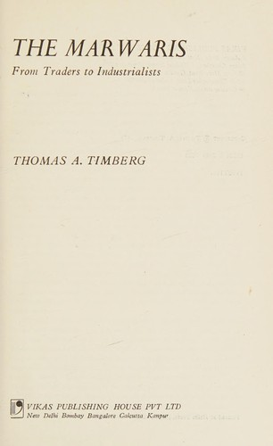

Library › History
The Marwaris: From Jagat Seth to the Birlas — Summary & Key Lessons

How a trading caste from the Rajasthan desert became India's business class: hundis, trust networks, jute mills and the dark side of the system.
📖 OPEN THE FULL INTERACTIVE BREAKDOWN →🌐 Read it in Hindi, Hinglish, Gujarati, Tamil & 22 more languages — free, with audio.
💡 The Big Idea
Timberg (economic historian) traces the Marwaris from desert traders to financiers of the Mughal decline (the Jagat Seth bankers who 'made and unmade kings'), through colonial Calcutta where community networks (hundi credit, bill discounting, family firms, trusted community accountants) conquered jute, stock exchanges and industry. The book's analytical core: Marwari success rested on community-based trust institutions that substituted for weak courts and formal finance, enabling scale without Western corporate structures. It is equally clear about the system's fragility: dependence on one patriarch, succession fratricide, overreach (Dalmia's empire fragmented), and the long transition to professional management (the Birlas' eventual modernization, the Tata-like shift from family control to institutional governance).
🧠 The 8 Key Lessons
Lesson 1: Trust Networks Beat Weak Institutions
The Jagat Seth System
In an economy with slow courts and no national banking, Marwari networks moved credit across thousands of kilometers on reputation: hundi bills honored because defaulting meant community exile. The Jagat Seths became finance ministers in effect because their credit was more reliable than imperial treasuries. The general law: wherever formal institutions are weak, trust networks arise to price and enforce honesty, and controlling a network is itself a moat.
📖 Example: A hundi written in Calcutta could be cashed in a Rajasthan market town weeks later, honored by a Marwari banker who knew the family, the community standing, and the cost of being the one who dishonored it. Read the full example →
⚡ Do this: Map the trust network your business actually runs on (community, alumni, industry referees). Invest in your standing there before investing in contracts; in weak-institution markets, the network is the court.
Lesson 2: Community Knowledge Is a Information Advantage
The Calcutta Conquest
Marwari traders arriving in colonial Calcutta knew prices, credit and character across markets that individual English firms could not see, because information flowed through community channels (marriage alliances, regional chapters, the accountant caste). They entered jute and speculative markets with better intelligence than incumbents. The lesson: proprietary information flow through trusted channels is a competitive advantage that capital cannot buy.
📖 Example: Community members learned of a jute mill's distress or a shipment's delay through fellow Marwaris days before market announcements, buying or exiting on knowledge that was legal because it was relational, not stolen. Read the full example →
⚡ Do this: Build one structured information channel among your peers (founders' group, supplier circle, association WhatsApp) and be its most generous contributor; the intelligence will compound.
Lesson 3: The Family Firm's Strength Is Its Succession Flaw
Patriarchs and Fratricide
The same family structure that concentrated trust concentrated succession risk: firms were the patriarch's extension, so death or discord became strategic crises, and siblings split empires (the Dalmia-Jain fragmentation being the book's cautionary arc). Some houses (Birlas) professionalized gradually, separating family from management. The lesson: design succession as a corporate process (councils, merit-based roles, buy-sell agreements) while the patriarch is alive, because the alternative is the market deciding.
📖 Example: The Dalmia group's post-founder splits carved one empire into multiple competing fragments, while peer firms that created holding structures and professional CEO roles kept compounding through generational handovers. Read the full example →
⚡ Do this: Write your family/partner succession architecture now: roles by merit, a dispute forum, and a buy-sell formula. Treat it as a founding document, not a deathbed one.
Lesson 4: Leverage Trust Carefully: It Is Both Capital and Collateral
Hundi Finance
Marwari firms grew with community credit (hundis, subscriptions, community banks) rather than equity markets: faster, cheaper, but denominated in reputation. One public default could vaporize decades of standing, which disciplined risk, until it didn't (speculative bubbles pulled whole networks down). The modern echo: founder-community fundraising (crowds, community rounds) carries the same double edge.
📖 Example: Community-financed expansion let Marwari firms scale through downturns banks would have starved; but when a leading house speculated and failed, creditors inside the network absorbed losses no disclosure requirement had prepared them for. Read the full example →
⚡ Do this: If you raise from your community, cap it: treat reputation-denominated capital as senior to your own comfort, and never let 'they trust me' substitute for disclosure documents.
Lesson 5: Enter Incumbent Industries Through Service, Then Buy
Jute and the Back Door
Marwaris entered British-dominated jute not by head-on builds but through service niches (trading raw material, supplying, brokerage), learning the economics from inside, then acquiring mills in downturns from departing owners. The pattern: service entry, information accumulation, counter-cyclical purchase. It works wherever incumbents are exiting for non-economic reasons (colonial retreat, regulatory fatigue, generational sale).
📖 Example: The great Marwari jute acquisitions clustered around British exit windows (wars, depressions, partition), when community credit let Marwaris buy at prices incumbents' bankers could not match. Read the full example →
⚡ Do this: Identify the incumbents in your market likely to exit for non-economic reasons (age, regulation, currency) in the next five years. Position now to be the natural buyer: service relationships, cash discipline, community credit lines.
Lesson 6: Professionalize Before the Firm Outgrows the Family
The Birla Transition
The Birlas' longevity (versus fragmented peers) came from early moves toward professional management: educated heirs, non-family CEOs in key roles, institutional boards, while keeping family strategic control. The transition was gradual and contested, but it decoupled firm survival from family harmony. The rule of thumb: the moment revenue depends on processes the founder cannot personally supervise, governance must shift from trust to systems.
📖 Example: By the third generation, leading Marwari houses ran management trainee systems and professional boards (uncommon for Indian family firms of the era), which is why those names still headline Indian industry today. Read the full example →
⚡ Do this: Name the process in your company the founder can no longer personally verify. Hire or promote a professional owner for it this year, with defined authority and reporting.
Lesson 7: Reputation Is a Balance Sheet Line: Audit It
The System's Dark Side
Timberg is honest about the shadows: community exclusion enforced conformity, speculation hid behind respectability, and the same opacity that protected trust also concealed fraud until it exploded. Modern descendants of the system (Ponzi-style community schemes, opaque promoter groups) inherit both edges. The discipline: audit your reputation's sources; trust built on performance compounds, trust built on opacity eventually invoices you.
📖 Example: Community-run deposit schemes in the Marwari world periodically collapsed when trust outran verification, a pattern repeating in modern India (our linked case study is a jewelry-dynasty version: the same networks, the same surprise). Read the full example →
⚡ Do this: List what your stakeholders trust you for, and build one independent verification for each (audit, third-party review, public dashboard). Trust with verification is armor; trust without it is a fuse.
Lesson 8: From Caste Capital to Institutional Capital
What the Marwaris Teach Modern India
The arc of the book: community networks as the bridge from pre-modern trade to modern industry, then (for the survivors) a deliberate move beyond them, into corporate governance, professional capital markets and pan-Indian (later global) talent. The lesson for any founder community today (startup ecosystems, diaspora networks): networks are scaffolding, brilliant for the climb, fatal if mistaken for the building. Use the trust to build institutions that transcend the network.
📖 Example: The houses that define Indian industry today are those whose founding communities' names appear mostly in history chapters, because the firms graduated into institutions: exactly the migration every startup ecosystem must make from founder-clique to governance. Read the full example →
⚡ Do this: Write the one institution (board, ESOP structure, professional CFO, documented processes) your network-dependent company must build in the next 12 months to survive past its founders' circles.
✅ 5-Step Action Plan
- Invest in your standing inside one trust network before buying more contracts.
- Build one structured peer information channel and contribute to it most generously.
- Draft succession architecture (roles, forum, buy-sell) while it is still hypothetical.
- Cap reputation-denominated fundraising and never skip disclosure documents.
- Move one founder-verified process under professional ownership this year.
⚠️ When This Doesn't Work
Timberg writes economic history from community records, firm archives and prior scholarship: pre-colonial finance details are reconstructed, family-firm internals are selectively documented, and 'Marwari' itself is a broad label covering diverse communities whose internal differences the book necessarily flattens. Some generalizations (community trust, information flow) are analytical reconstructions, not documented practices of every firm. Read as structural history, not as a portrait of any single family.
💀 The Graveyard Proves It
💍 Gitanjali Gems — The Other Uncle in the PNB Fraud. Burn: Part of the ₹14,000 crore PNB hole. Read the full case study →
💬 Best Quotes from The Marwaris: From Jagat Seth to the Birlas
- “The hundi was a promise with a face behind it, and the face was the collateral.”
- “Community trust substituted for courts, and it worked until the community outgrew the trust.”
- “The firms that survived were the ones that stopped being the boss's family and started being institutions.”
Interactive version: mark lessons as read, listen in your language, share quote cards.